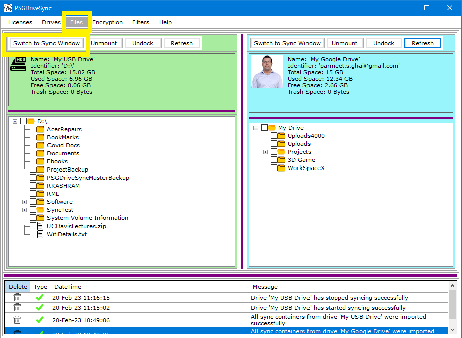

"Start Sync" operation allows you to start sync operations on a drive. Whenever sync operations are started, even on one drive, the following
functionalities get disabled.
|
1 |
Go to "Files" window and click on "Switch To Sync Window" button on the control bar of the drive that you need to work with. |
 |
|
2 |
Click on the "Start Sync" button on the control bar. |
|
|
3 |
All the functionalities mentioned above should show as Disabled / Greyed Out or Inaccessible. |